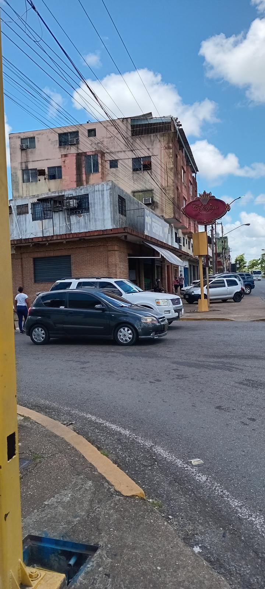
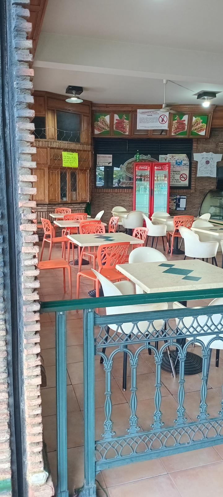
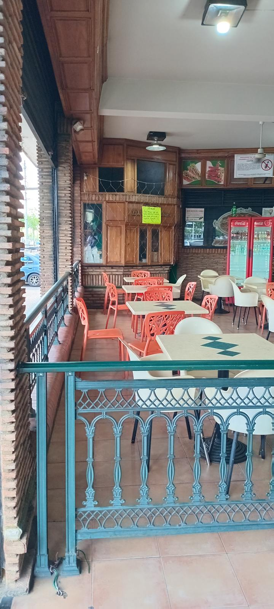
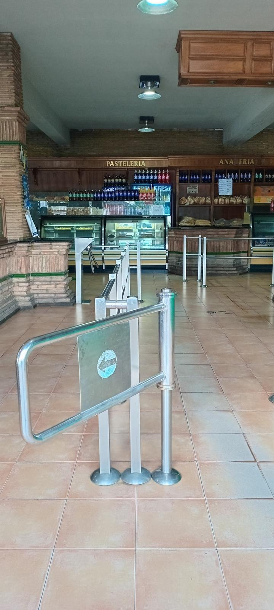
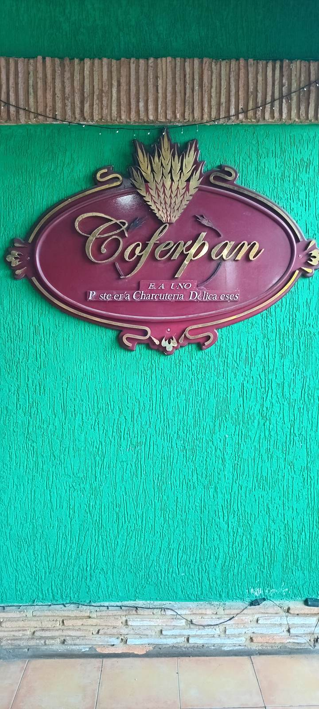

Coferpan · Maturín · Desde las 6:00 a.m.
La carta de la casa
Pastelería, charcutería y delicateses en la avenida Raúl Leoni, frente al polideportivo. Pan recién horneado desde las seis de la mañana, dulces de vitrina y una mesa tranquila para conversar. Pase y lea con calma: esta es la carta de un clásico de Maturín.
La casa
Coferpan es de esas casas que Maturín da por sentadas porque siempre han estado ahí: la esquina de ladrillo en la avenida Raúl Leoni, el salón de madera labrada, el mostrador atendido con oficio.
Los años trajeron épocas duras, y la casa siguió abriendo todos los días desde las 6:00 de la mañana. Eso no se improvisa: se gana, hornada a hornada.
4.0 · 438 reseñas en Google Maps


Un café para su cita de negocios
El salón
Hay conversaciones que no se resuelven por teléfono. Para esas, la casa tiene mesa: la terraza techada de rejas verdes, un café recién colado y algo dulce de la vitrina.
Usted trae el tema. El resto lo pone Coferpan.
En la avenida Raúl Leoni, frente al polideportivo: a mitad de camino de cualquier diligencia. Se atiende en el local, para llevar o con delivery.
Aparte su mesa
Panadería & Pastelería
Los rótulos sobre las vitrinas lo dicen sin adornos: Pastelería, Panadería. Esta es la parte de la carta que huele a horno.
Golfeados La especialidad
Nuestra especialidad — así lo decimos nosotros mismos, y lo sostenemos. Para comer aquí con café, para llevar o para mandar a pedir.
Canillón y pan del día
Canillón, pan dulce y el pan de todos los días, horneado en casa desde la madrugada.
Desayunos Desde las 6:00 a.m.
Cachitos, pastelitos y desayuno americano para empezar el día temprano, como abre la casa.
Dulces y chuches de vitrina
Lo dulce se elige mirando: la vitrina de la casa cambia y siempre tiene con qué tentarlo.
Temporada navideña
Pan de jamón y panettone: la época fuerte de la casa, cada diciembre.
En el local · Para llevar · Delivery con cobro a destino

Lo que nadie más en Maturín cuenta así
La mesa árabe & Delicateses
Junto al pan, esta casa pone en la mesa una cocina árabe preparada aquí mismo, con recetas de las de verdad.
- Falafel
- Kibbe
- Tabaquitos de hoja de uva
- Crema de garbanzo
- Crema de berenjena
- Tabule
Cocina árabe de la casa
Y en la charcutería, delicateses para llevarse a la suya: la otra mitad del letrero también se cumple.

El libro de reservas
Elija tres cosas y la casa escribe la línea por usted. El mensaje sale por WhatsApp y Coferpan le confirma la mesa, como se ha hecho siempre: conversando.
Elija usted
La casa escribe
Este libro no aparta la mesa por sí solo: arma su mensaje. La confirmación se la da la casa, por WhatsApp.